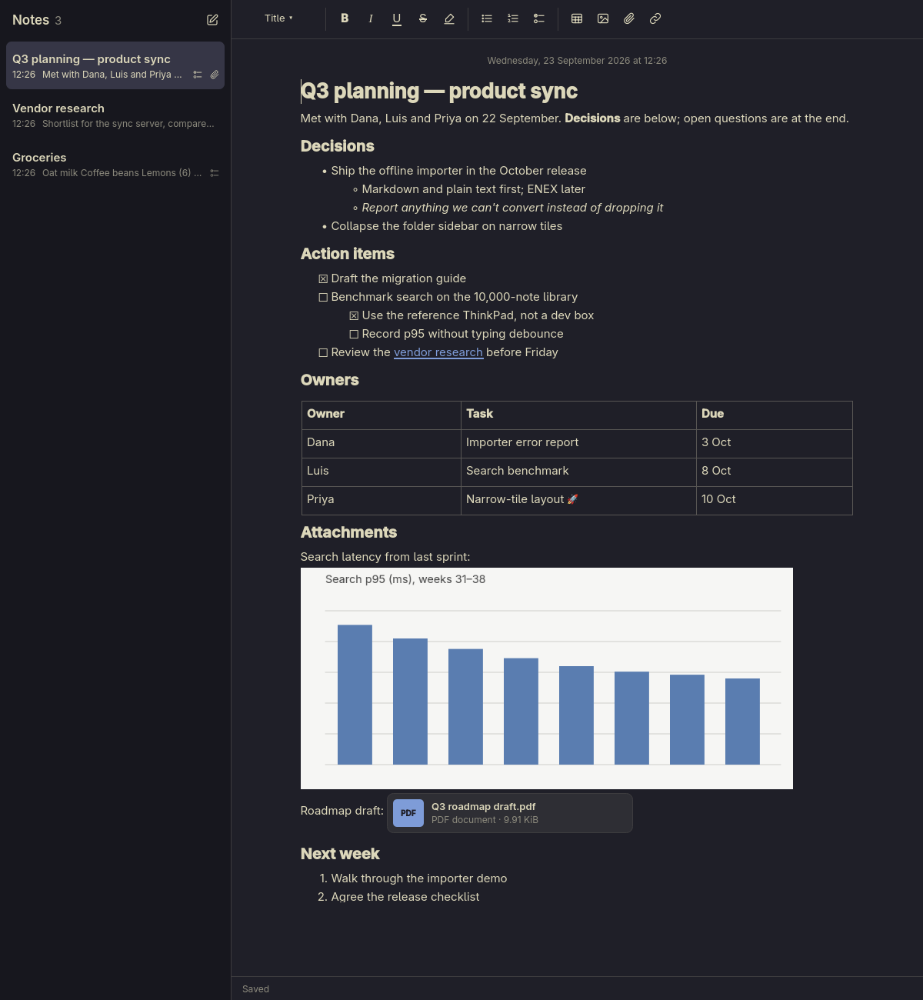
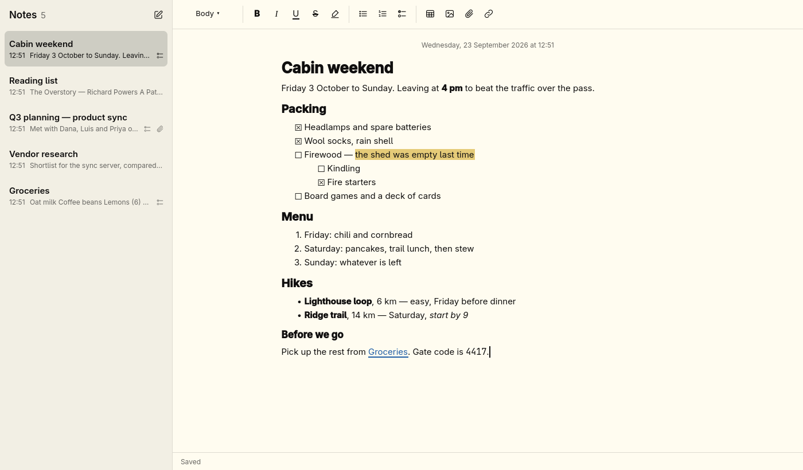
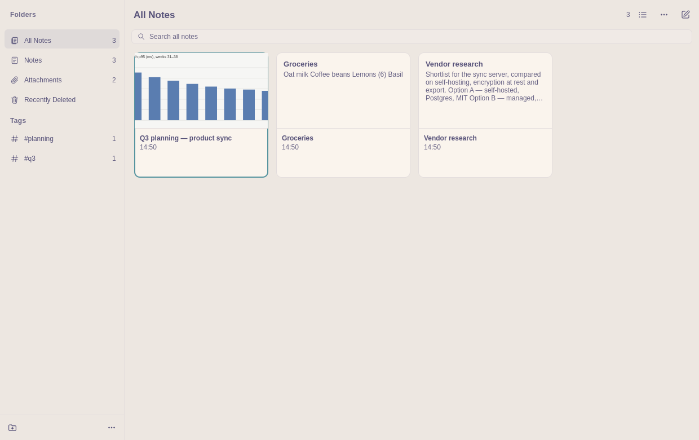

Notes that feel at home on Omarchy.
Apple Notes' easy capture, rebuilt as a fast native app for your desktop. Start typing and it's saved: checklists, tables, images, #tags and search, stored on your machine and dressed in your theme.
yay -S omarchy-notes

Everything you reach for, nothing you don't.
Omarchy Notes does what you use Apple Notes for, the Linux way: keyboard-first, offline, and stored in files you own.
Write, it's saved
Autosave confirms "Saved" only once your words are really on disk. If saving ever fails, your text stays put with Retry and Export.
Checklists and tables
Nested checklists with round checkboxes, numbered and bulleted lists, and tables where Tab moves between cells.
Images and files
Paste images, attach PDFs and anything else, and browse every attachment across your notes in one place.
Folders, tags, Smart Folders
Nest folders, type #work to tag, and save filters like "tagged #work with an open checklist" that stay current.
Find anything
Search all notes as you type with Ctrl Shift F, or find inside a note with Ctrl F.
Quick Note
A small capture window on a key of your choice, plus omarchy-notes --capture "idea" from any terminal.
It wears whatever theme you do.
Colours come straight from your active Omarchy theme and change the moment you switch, with automatic fixes when a palette would be hard to read.


No account. No cloud. No lock-in.
Your library is a folder in ~/.local/share/omarchy-notes: one SQLite database and your attachments.
- Works offline, always. Nothing leaves your machine.
- Crash-safe. Every confirmed save survives a power cut, and deleted notes wait 30 days in Recently Deleted.
- One-click backups. Complete copies you can restore, checked before anything is replaced.
- Leave any time. Export notes as Markdown, HTML or PDF, or your whole library as Markdown folders.
- Moving in. Import Markdown files or whole folders from Apple Notes exporters, Obsidian and more.
Up and running in a minute.
From the AUR
On Omarchy or any Arch system:
yay -S omarchy-notesThen open it
Press Super Space and search for Omarchy Notes. Optional: put Quick Note on Super Alt N. This checks your existing key bindings first and never overwrites one:
omarchy-notes --setup-hyprlandOr build it yourself
You'll need Qt 6.8 or newer, SQLite, CMake and Ninja.
git clone https://github.com/jasona/omarchy-notes.git cd omarchy-notes cmake -S . -B build -G Ninja -DCMAKE_BUILD_TYPE=Release -DCMAKE_INSTALL_PREFIX="$HOME/.local" cmake --build build && cmake --install build